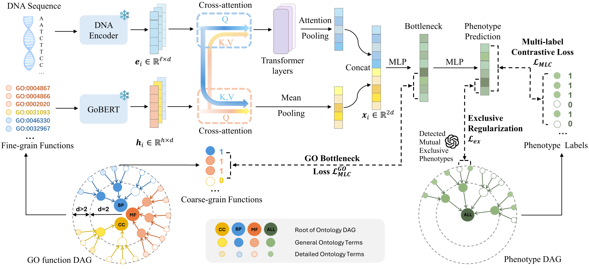

Research Project
GenePheno
Predicting knockout-induced phenotype abnormalities directly from gene sequences.

Overview of GenePheno for predicting gene knockout-induced phenotype abnormalities from gene sequences.
Overview
Understanding how genetic sequences determine organismal phenotypes is a central challenge in biology. However, connecting gene sequences to phenotypic outcomes remains difficult due to the large modality gap between sequence information and phenotype observations, as well as the pleiotropic nature of gene–phenotype relationships.
Existing sequence-based approaches typically focus on predicting the effects of specific variants on a limited number of phenotypes. Meanwhile, broader gene knockout phenotype prediction methods often rely heavily on curated biological knowledge as inputs, limiting their scalability. GenePheno addresses this gap by directly predicting phenotype abnormalities caused by gene knockout using only canonical gene sequences.
Key Idea
GenePheno formulates the task as an interpretable multi-label prediction problem, where the goal is to predict the presence of multiple phenotype abnormalities following gene knockout. The model employs a contrastive multi-label learning objective to capture correlations between phenotypes while enforcing biological consistency through an exclusivity regularization.
To provide mechanistic interpretability, GenePheno incorporates a gene function bottleneck layer that connects sequence-derived representations with functional concepts underlying phenotype formation. To support this research direction, we also curate four datasets linking canonical gene sequences with knockout-induced phenotype abnormalities. Experiments demonstrate strong performance across datasets and show that the model can reveal biologically meaningful gene–phenotype relationships.